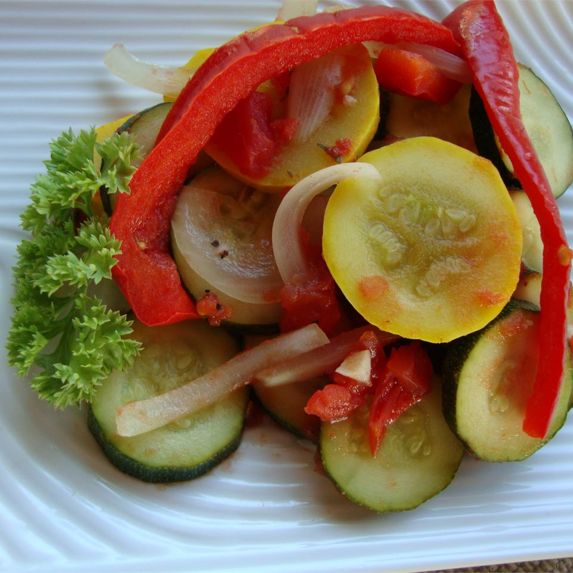

Ratatouille

Ratatouille is a French vegetable dish comparable to
lasagna in its preparation. It consists of layered
vegetables layered in a casserole dish, though the
contents and consistency can be varied according to
the whims of the creator. While some may decry it
as a peasant dish, a humble origin does not define
its capabilities.
Ingredients
- 2 tbsp olive oil
- 3 cloves garlic (minced)
- 2 tsp dried parsley
- 1 eggplant (cubed, 1/2 in)
- salt
- 1 cup grated parmesan cheese
- 2 zucchini (sliced)
- 1 large onion (sliced)
- 2 cups mushrooms (sliced)
- 1 green bell pepper (sliced)
- 2 large tomatoes (chopped)
Directions
- Preheat oven to 350°F
- Coat a 1 1/2 qt casserole dish with 1 tbsp olive oil.
- Coat a medium skillet with remaining olive oil. Place on medium heat.
- Add the garlic to the skillet and cook until lightly browned. Stir regularly to prevent burning.
- Mix in parsley and eggplant. Continue cooking until the eggplant is soft. Add salt to taste.
- Spread the eggplant mixture evenly at the bottom of the casserole dish. Lightly sprinkle with Parmesan.
- Add a layer of zucchini on top of the eggplant mixture. Lightly salt and sprinkle Parmesan.
- Add layers of remaining vegetables as desired, salting and adding Parmesan over each.
- Bake for 45 minutes.
Recipe from allrecipes.com